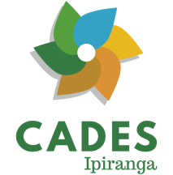

O CADES Ipiranga é um conselho composto por 8 membros da sociedade civil e representantes do poder executivo, todos voluntários. Ele facilita a participação da comunidade na criação de políticas públicas sobre meio ambiente, desenvolvimento sustentável e cultura de paz em nível local. Suas ações estão alinhadas com os princípios da Agenda 21.
A Casa das Caldeiras é uma antiga fábrica de alvenaria de tijolos construída nos anos 1920 em São Paulo. Em 1986, foi tombada pelo CONDEPHAAT como patrimônio histórico. Após ser restaurada em 1999, tornou-se um local para uma variedade de eventos. Com características marcantes, como três chaminés altas, caldeiras preservadas e amplos espaços, a Casa das Caldeiras é um espaço versátil e reconhecido para diferentes tipos de eventos.
A Missão Ambiental é uma empresa de consultoria ambiental que atua no mercado desde 2001, com o objetivo de oferecer soluções ambientais para empresas e pessoas físicas. A empresa é formada por uma equipe multidisciplinar de profissionais especializados em diversas áreas, como engenharia, biologia, geologia, geografia, arquitetura, entre outras.